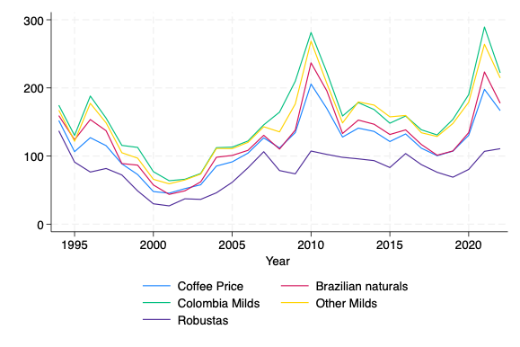
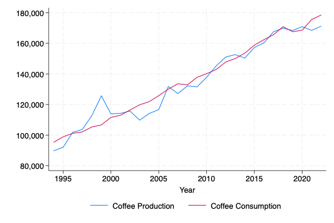
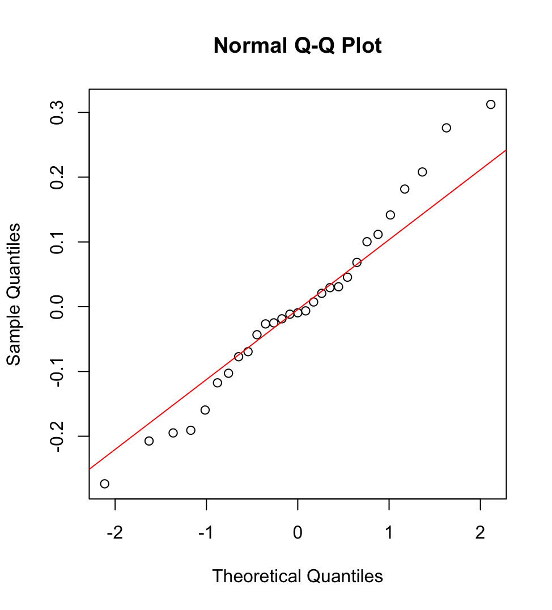

Econometric Analysis Using R and Stata — uncovering the drivers of global coffee prices (1994–2022).
Explore Findings ↓This project analyzes the key economic determinants of global coffee prices using econometric techniques. Using a dataset covering 1994–2022, I applied log-linear regression models, robust standard errors, residual diagnostics, and stepwise selection to identify the most influential factors on coffee price dynamics.
This figure shows price dynamics across coffee types from 1994 to 2022, highlighting market shocks and price spikes.
This figure compares coffee production and consumption over time, showing steady demand growth alongside supply.
model <- lm(ln_CoffeePrice ~ ln_CoffeeConsumption + ln_Imports + ln_ExchangeRate + ln_OilPrices, data = data)
summary(model)
coeftest(model, vcov = vcovHC(model, type = "HC1"))This Q-Q plot visualizes the distribution of residuals to check the normality assumption after running the regression model. The points should align with the straight line if the residuals are normally distributed.
I also contributed to the International Coffee Organization’s published report: Global Coffee Funding Mechanisms (June 2024)